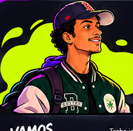

Desenvolvimento de APIs
APIs REST, autenticação, integrações e arquitetura.
Olá,
eu sou
Backend Developer
Desenvolvedor Back-end focado em construir APIs seguras, escaláveis e produtos digitais de verdade.
Projetos reais, APIs, aplicações completas e soluções que mostram minha evolução como desenvolvedor.
Explorar projetos →
Sou o Vitor Melo, desenvolvedor Back-end, apaixonado por tecnologia, produtos digitais e por transformar ideias em soluções reais. Atualmente moro em Londres e sigo evoluindo nos estudos e projetos.
APIs REST, autenticação, integrações e arquitetura.
Aplicações e sites responsivos com interfaces modernas.
Modelagem, otimização e integração com bancos relacionais.
Comunicação entre sistemas, serviços externos e automações.
Tenho ideias, projetos e estou sempre aberto a novas oportunidades e parcerias.
Entrar em Contato